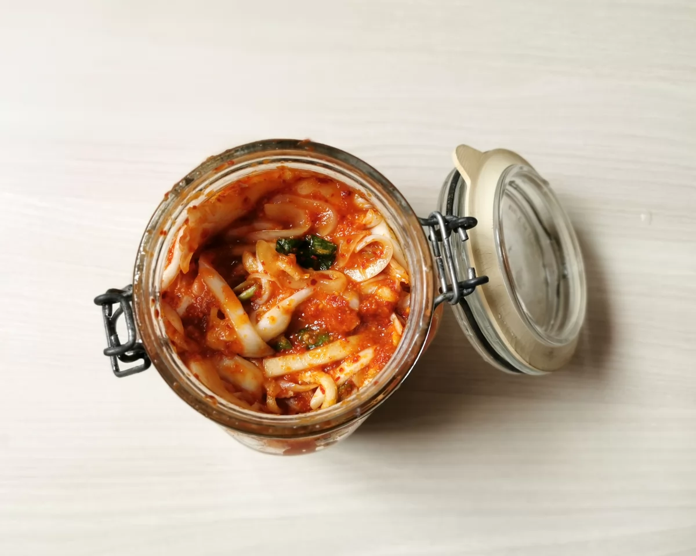

Falafel de garbanzos
Fáciles de preparar, hay que tener cuidado con la consistencia de la masa -que sea lo suficientemente húmeda pero no demasiado-. Por eso mezclamos ingredientes que aportan humedad como las hierbas aromáticas picadas y la cebolla rallada con un poco de harina que absorberá el exceso de humedad. La masa de falafel congela muy bien, así que se puede hacer mucha cantidad y congelar en porciones para 4, 8, 12 unidades.

Kimchi coreano tradicional
LEsta es la receta de uno de los tantos kimchi posibles, quizás el más común ya que se hace con la col china, cultivo abundante de invierno que permite hacer mucha cantidad a la espera de que lleguen las primicias de primavera. Los kimchi son, efectivamente, conservas de temporada, cuyo aliño varía en función del producto. Necesitarás: un poco de paciencia -el proceso de fermentación necesita mínimo una semana para desarrollarse plenamente-, un bote de cristal hermético y una tienda de productos asiáticos, porque hay un par de ingredientes que no va a ser fácil encontrar en el supermercado debajo de casa.
Sándwich de Pastrami
es un clásico en la cocina judía, lo cual podría llevarnos a pensar que su origen viene de ahí, pero sin embargo, parece que el origen está en Rumanía, como método de conservación de la carne. Su elaboración en casa no es difícil, pero si laboriosa y requiere cierta planificación pues nos llevará varios días. Podemos estructurar la preparación en tres partes básicas; salmuera, donde estará cinco o seis días, ahumado y cocción posterior. Es importante, como en cualquier otro sistema de ahumados y diferentes métodos de conservas, ser extremadamente cuidadosos en la elaboración y en la manipulación de ingredientes y utensilios, para evitar bacterias. En esta receta he utilizado polvo de Praga o sal de cura, que es sal común con nitrito de sodio (94% sal común y un 6% nitrito de sodio), ingrediente que se utiliza como conservante a la hora de hacer embutidos y carnes curadas. Además de darle ese color rosa tan particular a las carnes, los nitritos inhiben las bacterias causantes del botulismo. Podemos omitirlo y usar sólo sal normal. Eso sí, no hay que olvidar que el nitrito de sodio puede llegar a ser tóxico, por lo que es importante no sobrepasar las cantidades indicadas.
Poutine
se dice que la poutine nació en las granjas canadienses de la región de Quebec, donde les sobraban trozos de queso fresco y lo utilizaban para mezclarlo con patatas fritas y salsa de carne. Este plato es una de las exquisiteces de la street food quebequense. Lo más importante es servir la poutine y comerla en el momento, para que conserve la textura crujiente de las patatas fritas mientras el queso se ablanda sin fundirse del todo y la salsa todavía está caliente. La salsa gravy, como se le llama, se puede elaborar de diferentes formas, pero la base es siempre la misma: se tuesta la harina con la mantequilla hasta que adquiere un tono dorado, se añade el caldo (de carne o de pollo) y se salpimenta. Se le puede añadir también salsa Worcestershire para potenciar el sabor. El color de la salsa gravy va de más claro a más oscuro, dependiendo de lo reducido y concentrado que sea el caldo utilizado y también si es de carne o de pollo. El queso en grano no es fácil de conseguir, así que se puede sustituir por mozzarella de búfala o por mozzarella fresca en barra, que es más similar.